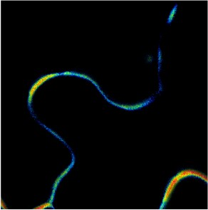
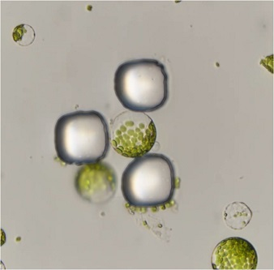
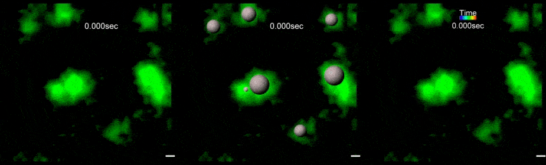
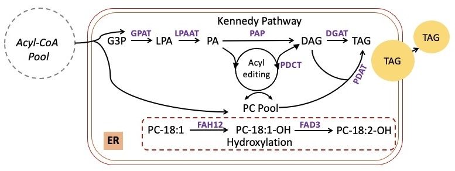

Welcome to the Pan Lab! We use a multidisciplinary approach to study plant lipid synthesis, modification and signaling with the goal of developing innovative engineering strategies to enhance crop productivity and bio-oil quality.
Positions are available for undergraduate and graduate students. Please click Join or email xp.pan@utoronto.ca for more information. As a lab, we strive to build an inclusive and diverse community where we feel supported intellectually and academically, valued and respected for who we are, and able to express ourselves freely.
Research
Our research interests revolve around plant lipid synthesis, modification and signaling with the goal of developing innovative engineering strategies to enhance crop productivity, bio-oil yield and quality.
Why we study plant lipids?
In plants, lipids as energy storage compounds or as integral participants in signal transduction play especially vital roles for plant growth, development, and stress responses. In addition, plant storage lipids in the form of triacylglycerols (TAGs) have been widely used for food, feed, biofuels, and industrial applications. Despite their clear biological and economic importance, many fundamental questions about lipid synthesis and function remain unanswered. A deeper mechanistic understanding of lipid biosynthesis and function is necessary for downstream enhancement of crop productivity and functionality.
How we do it?
We use a multidisciplinary approach that employs advanced live cell imaging, total internal reflection fluorescence microscopy, high-throughput single-particle tracking, microfluidic technologies, molecular genetics, protein and lipid biochemistry, evolutionary bioinformatics, and mathematical modeling. Here are some images of the techniques and approaches that we use in the lab:

Biochemical assays

Colocalization imaging and analysis

Confocal imaging of pavement cells

Evolutionary analysis

imaging of membrane lipid order

in vitro phosphorylation assays

lipid biochemistry

microfluidics-assisted imaging

molecular biology

protein-protein interaction studies

proteomics

quantitative analyses of pavement cell shape characteristics
TIRF imaging and single-particle tracking
Biochemical assays
Colocalization imaging and analysis
Confocal imaging of pavement cells
Evolutionary analysis
imaging of membrane lipid order
in vitro phosphorylation assays
lipid biochemistry
microfluidics-assisted imaging
molecular biology
protein-protein interaction studies
proteomics
quantitative analyses of pavement cell shape characteristics
TIRF imaging and single-particle tracking
What is our current focus?
1. Regulatory mechanisms of nanodomain formation
One branch of the lab’s research addresses questions related to how plant cells use lipids to precisely construct nano-compartments at the plasma membrane to harness signaling. The molecular organization and dynamics of the plasma membrane (PM) play a crucial role in the regulation of diverse cell signaling events implicated in plant growth, develop and stress responses, yet our understanding of the mechanisms underlying its organization and dynamics in plants is still rudimentary. Recently, our research (Pan et al. 2020) and the work of others demonstrated that the formation of dynamic, nanoscopic lipid-protein signaling domains in the PM, known as membrane nanodomains, is functionally important for plant cell signaling. These findings opened a new field in plant biology with many unanswered questions. We are particularly interested in understanding how signaling nanodomains form and how they achieve signaling specificity. The expected outcome of this research is identification of proteins capable of modulating local membrane lipid environment to assist the formation of specific signaling nanodomains. Successful completion of the proposed projects will introduce novel classes of regulatory enzymes into plant cell signaling pathways that would greatly expand the range of potential engineering targets for improving crop productivity.

TIRF imaging and single-particle tracking
2. Biological functions of signaling nanodomains
We also investigate another compelling question related to membrane nanodomains: What are the biological functions of signaling nanodomains in plants? We believe we can learn much more about the functions of membrane nanodomains by using the cross-disciplinary approaches. Thanks to a great collaboration with Professor Weitao Chen, we constructed a minimal mathematical model explaining how membrane protein/lipid nanoclustering contributes to cell polarity establishment through regulation of microtubule organization in Arabidopsis epidermal pavement cells. By integrating data-based modeling with model-inspired experiments, we will continue investigating other regulatory mechanisms involved in pavement cell formation. These additional mechanisms will provide ample scope for future improvements in both modelling and mechanistic understanding of the functions of nanodomains in cell polarization.

Mathematical modeling of nanodomain-based cell polarity establishment
3. Biosynthesis and functions of triacylglycerols
Another line of our work investigates evolutionary and biochemical mechanisms underlying triacylglycerol biosynthesis and explore the physiological functions of triacylglycerols. We are motivated to undertake this line of research by our belief that a better understanding of enzyme function evolution and the physiological functions of triacyclglycerols in plant development will be very useful for developing novel engineering strategies to further improve oil yield and quality in different tissues.

Schematic diagram of triacylglycerol biosynthesis